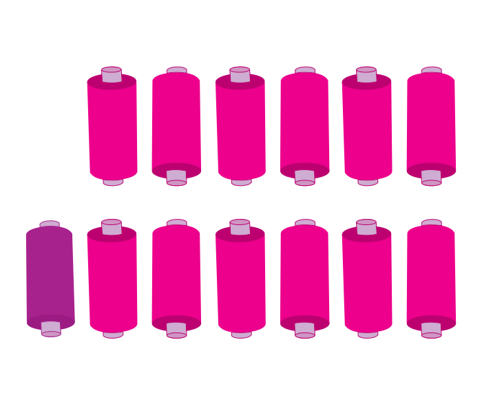
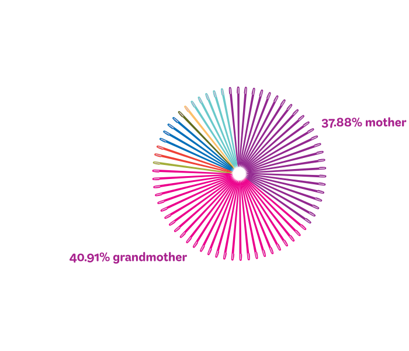
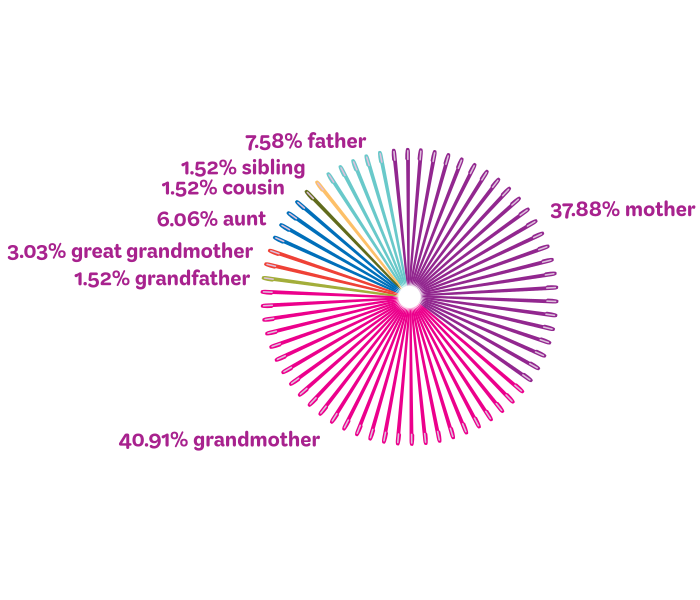
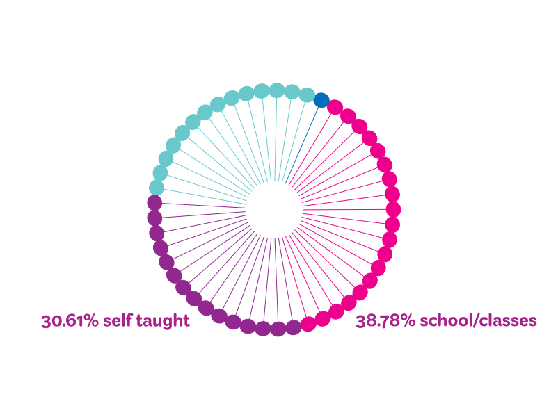
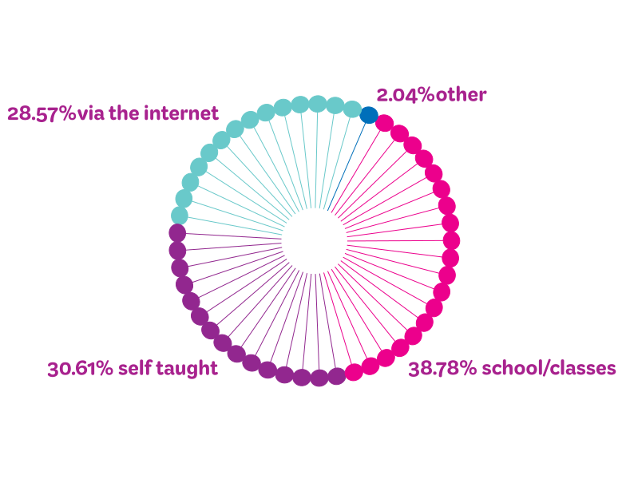
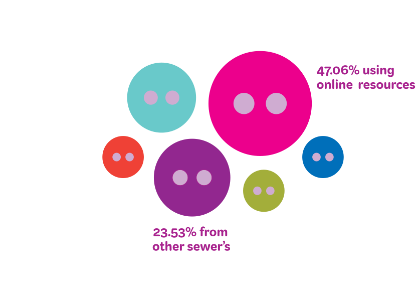
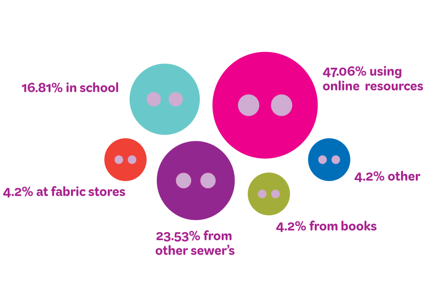
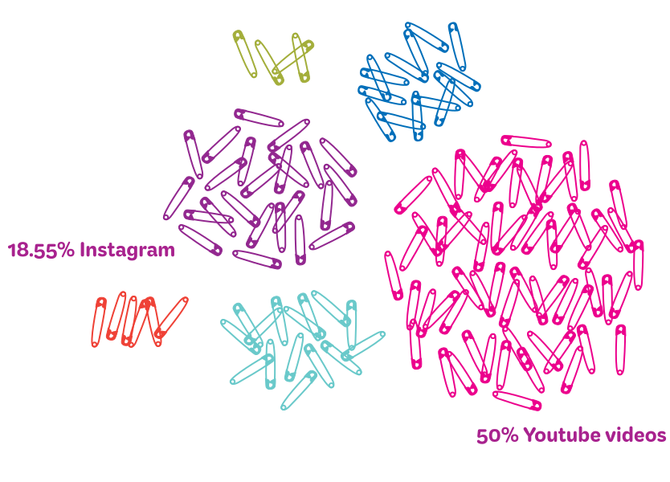
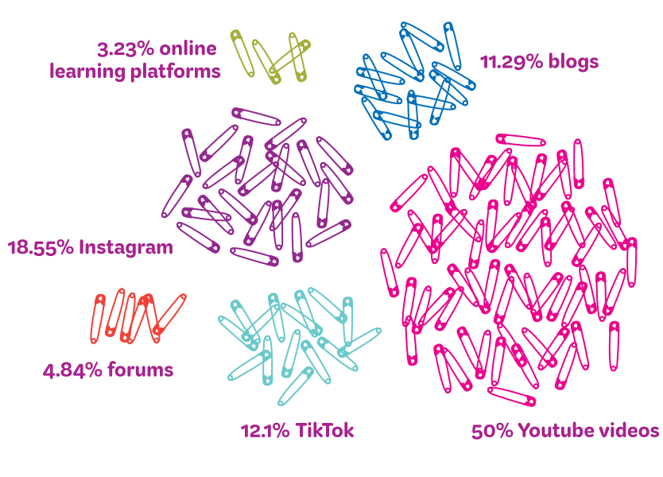
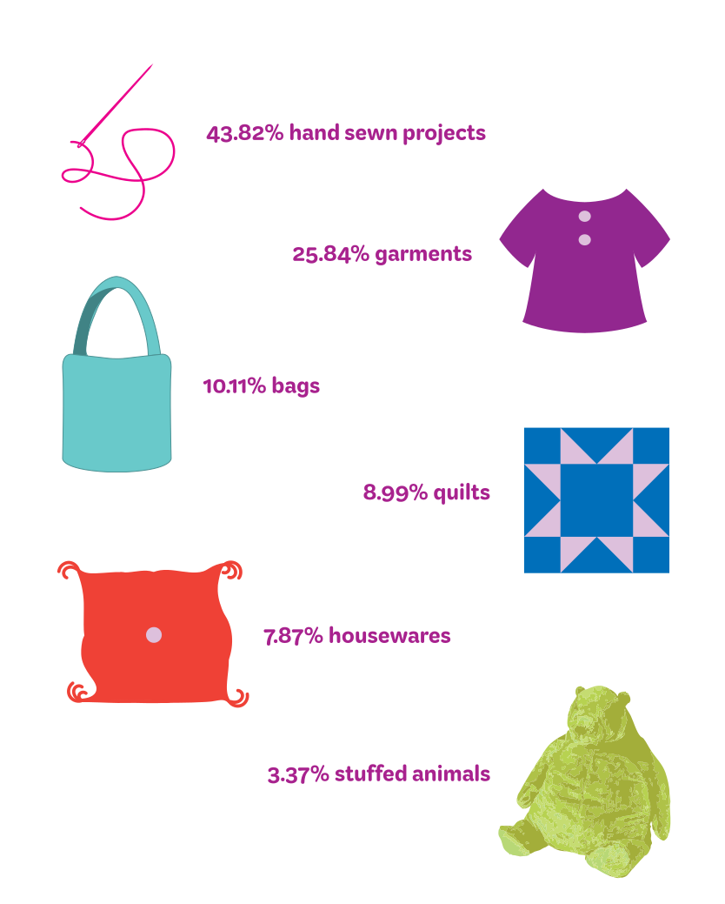

SEWING STATISTICS
Results from a sewing traditions survey conducted in the VCUarts community
Roughly 12 /13 people have a family member who knows how to sew

57.1%
of participants learned how to sew from a family member


2.6%
of those who know how to sew were taught by a friend
Those who didn’t learn from family or friends learned from..


Sewer’s choose to learn new skills..


Those who look online for tutorials or help with sewing typically choose..


Although family members are leading the charge on teaching initially, 68% of those who learned from a family member only know how to sew on a basic level.
When asked what they typically sew 32.58% of participants, regardless of who taught them, admitted that they dont actively sew.
Among those who currently sew the most popular items to make were..
